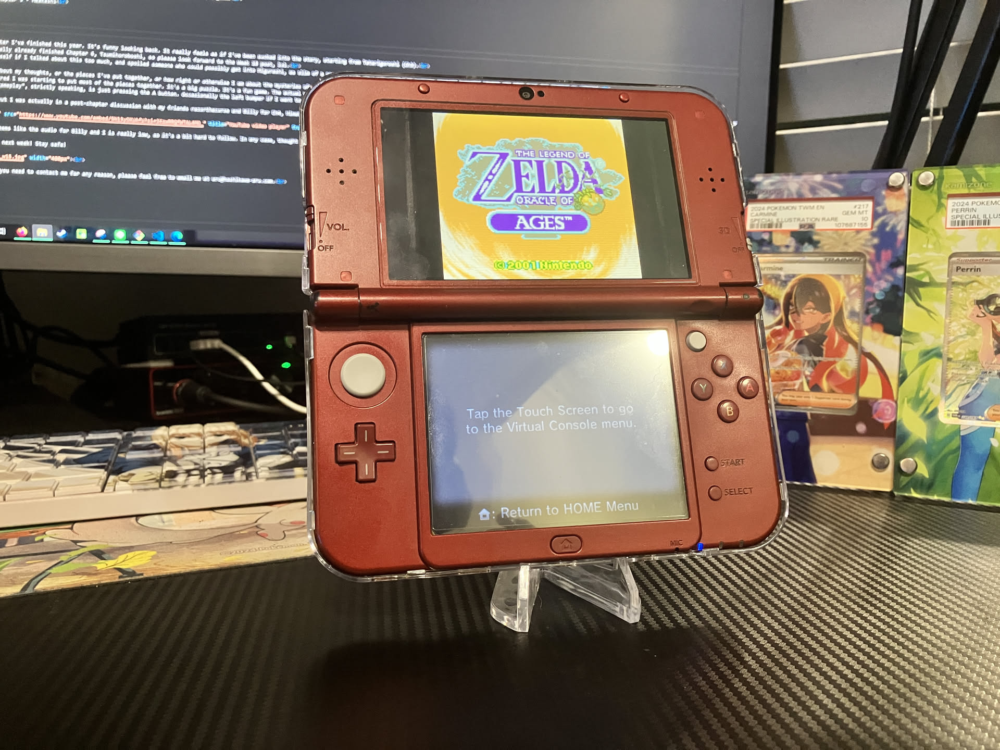

1game1week - Week 17 (4/23/25) - The Legend of Zelda: Oracle of Ages
Hey all! It's week 17! (4/23 -> 4/30)
So there I was... sitting and waiting for Switch 2 preorders to go live... and I remembered I didn't write a post today so I'm here panicking at 10:40PM wondering if I'll be able to finish before midnight.
New games from 4/16 -> 4/22:
* LUNAR Remastered Collection (PS4)
Currently, my backlog is at +16 (lower is better).
And onto 1g1w. Once again, a game is considered "beaten" if I've accomplished the main objective of the game.
GAME: The Legend of Zelda: Oracle of Ages
PLATFORM: 3DS
STARTED ON: 3/27
BEATEN ON: 3/30
TOTAL PLAYTIME: 27 Hours
After the behemoth that was Atelier Yumia, I really wanted to sit down and play a fun, simple, short puzzle game. I've actually had both Oracle games on my 3DS since they were released back in 2013, and I beat Seasons back then as well.
For those who don't know, Oracle of Ages and Oracle of Seasons are two sides of a coin. They're functionally more action vs. puzzle gameplay, with Ages being the Puzzle side of the coin.
By beating one, you can get a password (like one of those cool save passwords from before games had clock batteries) that you can use to start a 'game link' playthrough on the other. It doesn't do too much other than unlock the 'true' final boss and give you an extra heart.
Armed with the password in hand, I decided to see what the sequel / game link was all about.
This was supposed to be a short fun game that I'd play for a couple days. How did it turn out to be 27 hours...?
Well...
It's really unfortunate, but due to the bad habit of letting my 3DS die because I don't want to stop playing, I ended up fully losing my entire save... right at the final boss.
That's right. I didn't beat it and my entire progress was wiped.
I know what you're thinking... 'wow! that's really frustrating! I bet you didn't go back and try to do it again, right?'
Well you'd be wrong. I was so incredibly pissed at both the fact I just lost my save and at myself for letting it happen, so as you can probably surmise by now, I did exactly what a scorned little gamer would do. I started from the very tippy top.
Once again, armed with the password, I started out. Since this is mostly a puzzle-based game, it was decently simple as I had 'just' done all the puzzles.
Finally, I defeat the true final boss Ganon, save the princess, the whole works. I watch the credits, satisfied at getting back at the cruel, cruel fate that tried to stop me from making this post.
The End screen... Finally...
Out of pure curiosity, I decide to boot my save to see if there's any cool postgame thing I could do. And something's not right.
It turned out that I had not manually saved since the sixth dungeon (out of eight), so in the eyes of the game, even though I just came out of the End screen, I did not have a beat-the-game save file. Once again, you can probably guess my reaction. I was mostly just mad I didn't see this coming.
So there I was... massaging my temples and telling myself it'd just be a few hours. It'd be okay. And just a few hours it was.
ONCE AGAIN, I beat the sixth, seventh and eight dungeons, and beat the final boss and Ganon. I make sure to manually save *before* I saved the princess. And *that* did the trick. Finally. After all this time. I had a save file that just let me roam the world with no issues, and reach the credits whenever I wanted.
While it's all really funny in retrospect I was so incredibly frustrated at how much I had to go through just to beat a short 12 hour Gameboy game two and a quarter times. This should not have taken that long.
At it least was fun... fun puzzle games like these never get old. I'll hold firm that I prefer this Zelda model over the open-world ones any day. You go into a dungeon, you solve puzzles, you beat the bad guy, and you're done. It's already a fun, large world...
That's all for now. I got my Switch 2 preorder in, so I'm going to bed. See you all next week! Stay safe!

Thanks for reading! If you need to contact me for any reason, please feel free to email me at aru@hoshikawa-aru.com.